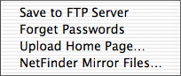
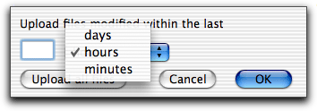
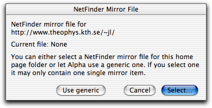

If Alpha doesn't know your password you are asked for it. (The text box is made so narrow that it is impossible to see what you type.)

 The menu contains functions for uploading your home page to an ftp server. In order to do so Alpha needs a helper application to do the uploading. Fetch, Interarchy, and NetFinder are the three ftp applications Alpha can talk to. Note! If you use NetFinder together with Alpha, NetFinder 2.1.2 or later is strongly recommended.
In order to use HTML mode's ftp functions you must provide information about the ftp server of your home pages. See the page about configuring HTML mode.
If Alpha doesn't know your password you are asked for it. (The text box is made so narrow that it is impossible to see what you type.)
Uploading with Interarchy
This works in the same way as using the item in Interarchy's menu and choosing your home page folder as source folder. See Interarchy's documentation for details how the mirror upload works with Interarchy. Note that Interarchy deletes remote files not found locally.
Uploading with Fetch
Fetch does not have a built in mirror function and therefore uploading with Fetch is more primitive. You have to specify yourself which files to upload by telling it to upload those files which have been modified within a certain period of time. When using Fetch a dialog box is first opened asking you about this before the upload starts.

Uploading with NetFinder
This works in the same way as NetFinder's built in mirror functionality, but there are some technicalities you need to be aware of. NetFinder uses mirror lists to do the mirroring. Therefore Alpha needs to know which mirror list file to use when telling NetFinder to start uploading. There are two options:
